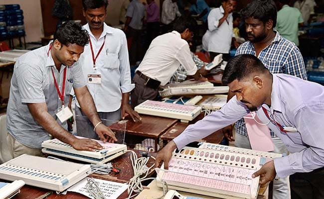

JAIPUR: Political parties raise suspicion on the role of Election Commission and make all kinds of allegations when competition is tough but the poll panel accepts all the challenges with open mind and maintains its integrity, Chief Election Commissioner OP Rawat said on Tuesday.
Mr Rawat, who was on a two-day visit to the state for a review of the preparations for the upcoming Assembly elections in the state, said there were no "fake voters" as such and the commission was continuously working to delete the duplicate voters and add legitimate ones in the electoral rolls.
It will be completely ensured that no duplicate voter cast vote in the upcoming elections, he added.
"When competition is tough, fingers are raised (on the role election commission) by political parties out of suspicion. We have accepted all the challenges with open mind and have come out clean. We are committed to ensuring a fair and transparent election process," Mr Rawat said at a press conference in Jaipur.
All administrative officers have been directed to work without fear and with transparently and act in an unbiased manner if rules are flouted, he said.
The poll panel will ensure that the Election Commission of India's (ECI) theme of 'no-voter-to-be-left-behind' was implemented for participation of every voter in building an empowered democracy, he said.
Mr Rawat came is in Jaipur on a two-day visit to take up the issues of political parties, civil society groups and review poll preparations. Assembly election in Rajasthan is due later this year.
Replying to a question on black money menace in election, Mr Rawat said it has come to fore that there were several expenditure-sensitive constituencies in Rajasthan and the commission was committed address the issues with the help of enforcement agencies.
Mr Rawat said that the commission was also mulling over steps to check instances of candidates furnishing false information in affidavits.
A case can be filed by anyone in the court against candidates providing false information in election affidavit. The Commission has also directed Income Tax authorities to probe information provided by candidates. The Commission is mulling to act on the basis of probe report, he added.
"When Competition Is Tough, Fingers Raised": Election Chief On Polling

Election Commission directed Income Tax authorities to probe information provided by candidates.